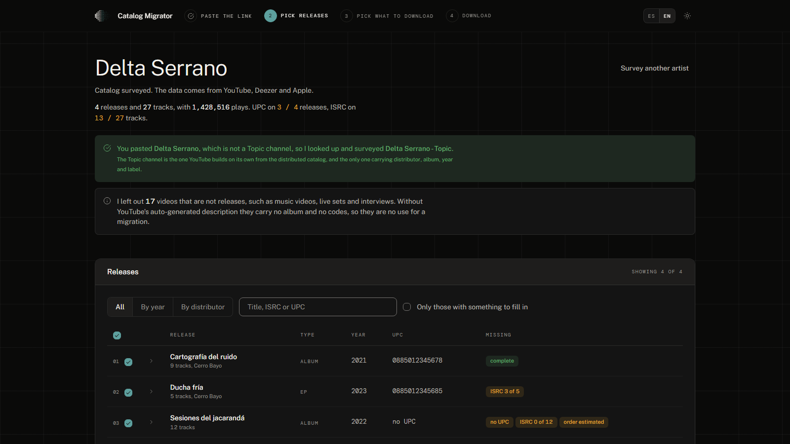

Switch distributors
without losing the codes.
Paste the link to the artist's YouTube channel and the app builds the package for the new distributor: the ISRCs and UPCs that can be recovered from Deezer, the artwork from Apple Music at the highest resolution there is, an ingestion sheet to load, and a validation that flags what distributors usually reject.
Free, open source and with no accounts: it runs entirely on your computer.
On a Mac you open it from Terminal the first time: the five-minute guide says how.

Who it is for
For whoever manages a catalog and is taking it to another distributor: a small label, a manager, a distributor or the artist themselves, with a catalog they own or manage with the rights holder's authorization.
It is not for you if you need a DDEX XML, if the catalog is not on YouTube with its Topic channel, or if you are after downloading other people's music.
How it works
- Paste the link to the artist's channel, Topic or
@handle, or to any of their songs. - Pick the releases to migrate: the table flags which ones are missing something.
- Pick what to download: spreadsheet and validation, artwork, and audio if you turned that module on.
- Download a ZIP with one folder per release, and the app tells you what comes next.
Frequently asked questions
- Does it work with my distributor?
- It does not connect to any: it builds the files and you do the upload. The ingestion sheet carries the columns in common use and also comes in Excel so you can adapt it.
- Do I need to know how to code?
- No. On Windows you install it with a double click; on a Mac you paste three lines into Terminal the first time.
- Is it legal?
- The app reads public data from YouTube, Deezer and Apple, and it is meant for migrating a catalog you own or manage with authorization. The terms say so in detail.
- Where does my data go?
- To no server of the author's: there is none. Your YouTube key stays on your computer.